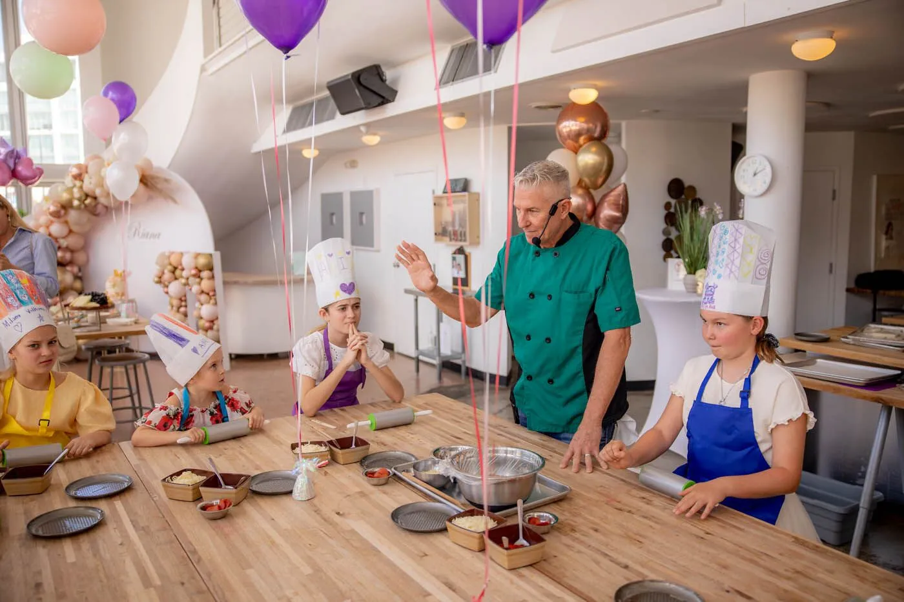

In addition to cooking classes, Yoko's Kitchen also offers catering
services for private gatherings, birthday celebrations, business
meetings and community events.
Every menu is prepared with fresh ingredients and inspired by
traditional Japanese cuisine. Customers can choose from a variety of
dishes including grilled chicken, rice bowls, noodle dishes and
vegetarian alternatives.
Our goal is to provide food that not only tastes great but also creates
a memorable experience for guests. Each event is planned individually
to ensure that the menu matches the occasion.